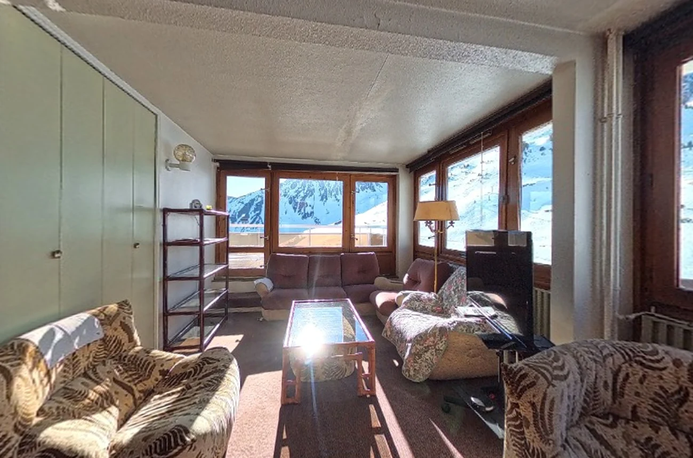
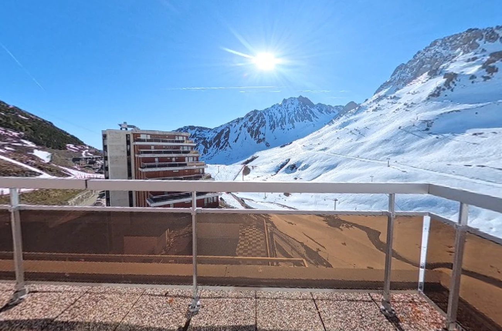

La montagne,
à perte de vue.
Un rooftop singulier face aux sommets du Grand Tourmalet. Découvrez ses espaces, sa lumière et ses terrasses comme si vous y étiez.
Un horizon
sans limites.
Ici, le regard se prolonge naturellement jusqu'aux crêtes. Les espaces intérieurs s'ouvrent sur un environnement de montagne spectaculaire.
Des pièces de vie baignées de lumière aux chambres, en passant par la cuisine et les espaces extérieurs, parcourez le bien à votre rythme grâce à une visite immersive réalisée à partir des prises de vues sur place.
Entrer dans le rooftopsur les montagnes
en immersion 360°


Chaque espace.
Chaque perspective.
Déplacez la vue à 360° avec la souris ou le doigt, zoomez, puis choisissez les espaces à explorer. Les points interactifs vous guident d'une vue à l'autre.
Terrasse · Panorama
Vue à 360° sur les montagnes et la terrasse
La montagne
en grand.
Profitez de plusieurs points de vue depuis les terrasses et les pièces lumineuses, face aux reliefs des Pyrénées.
Un projet vous
inspire ?
Cette présentation privée donne un premier aperçu du bien. Pour obtenir les informations détaillées ou organiser une visite, rapprochez-vous de votre interlocuteur.
Un horizon unique.
Un lieu à découvrir.